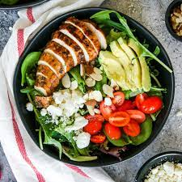

Balsamic Chicken Salad

An easy and versatile muscle-making meal.
Make a batch or two on Sunday night and store in the fridge for easy weekday meals. If you don’t have leftover cooked chicken, then use
pre-cooked rotisserie from the market. Serve over a green salad, bagel crisps, stuffed into whole grain pita, or inside lettuce leaves.
Ingredients
- 3 cups finely chopped cooked skinless chicken
- 1⁄2 cup toasted chopped nuts (such as almonds, pistachios, walnuts or pecans)
- 1⁄2 cup chopped apple (may also use grapes)
- 1⁄4 cup dried cranberries
- 2 Tbsp non-fat plain Greek yogurt
- 3⁄4-1 cup light balsamic vinaigrette
- Salt and pepper to taste
Steps to Make it
- In a large bowl, toss together chicken, nuts, apple, and cranberries. Stir in Greek yogurt.
- Drizzle with vinaigrette and toss until combined. Add salt and pepper to taste.
- Chill, covered, 15 minutes or until ready to serve.